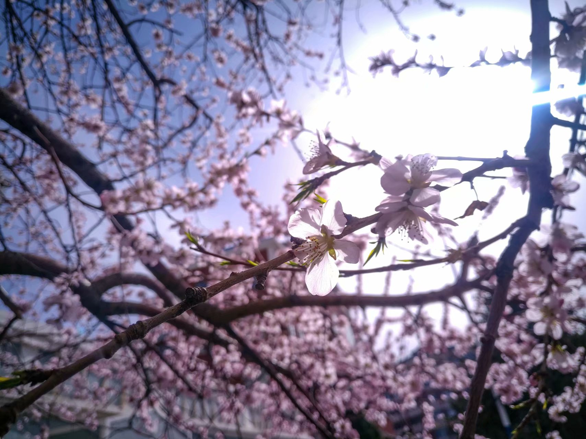

title: Spring - 2 date: 2018-04-05 18:05:11 layout: post tags:
前方多图预警： 高清无码
之前买的二手相机因质量问题坏掉了哦，所以今年的这组照片就轮到我用手机来拍啦。 毕竟是手机拍的照片，DNG格式的照片总是发白（大概是我在强光下拍照导致的吧），所以后期时不由自主的把照片调成了“老抽酱油放多了”的高对比度，低亮度色调了～。




以上照片拍摄自2018.3.28
以后就无法在春天这时候拍高中校园的花了，未来会变得什么样了呢？
本篇于2018年7月8日调整了文章的内容。主要的变动：删除掉了一些闲言碎语。 后因储存图片的服务器被删除，数据恢复后又新增了几张图片。